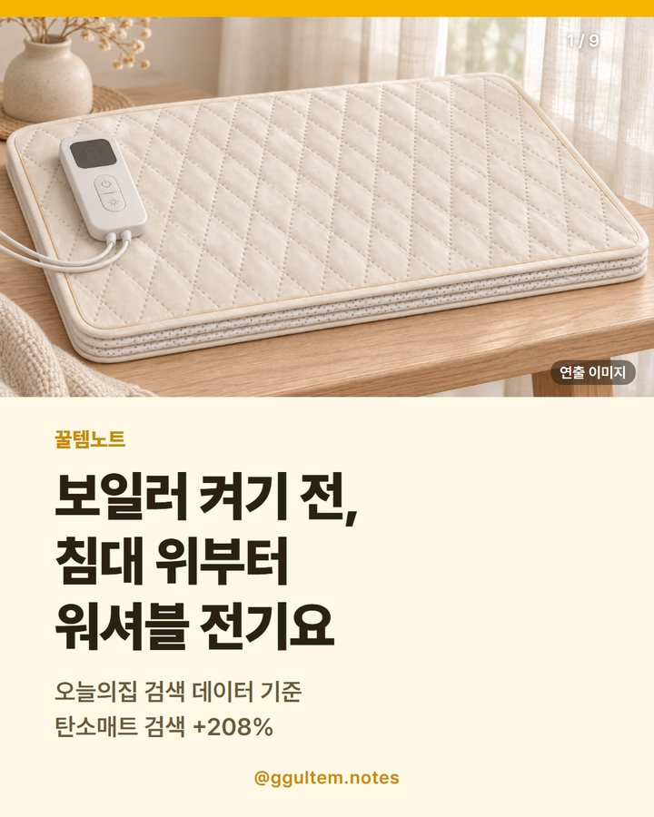

워셔블 전기요 추천 — 탄소열선 무자계 듀플렉스 고르는 법
2026.11.10 작성 · 꿀템노트
워셔블 전기요는 세탁 가능 표기와 세탁 방법, 열선 방식, KC 인증정보, 사이즈를 상품 페이지에서 확인하고 고르면 돼요.

이미지는 이해를 돕기 위한 일러스트이며 실제 상품과 다를 수 있어요.
요즘 난방 매트류 검색, 얼마나 늘었나
벤처스퀘어(한혜선 기자, 2026.11.06)가 전한 오늘의집 검색 데이터에 따르면, 10월 16~31일 검색량은 직전 기간(10월 1~15일)과 비교해 탄소매트 +208%, 온수매트 +120%, 전기장판 +109%, 전기매트 +92% 늘었어요.
검색량이 늘었다는 뜻이지 판매량이 늘었다는 뜻은 아니에요. 이 글의 상품은 기사 속 특정 제품이 아니라 같은 난방 매트류인 탄소열선 전기요 한 가지예요.
워셔블 전기요 고르는 법 — 체크포인트
| 확인 항목 | 볼 곳 | 이 글의 상품 표기 |
|---|---|---|
| 세탁 가능 여부 | 상품 정보·상세 세탁 방법 | '세탁 가능' 표기, 세탁 방법 안내 있음 |
| 열선 방식 | 상세 설명 | 무자계 열선(두 선을 꼬아 자기장을 상쇄한다고 설명), 탄소 피복 |
| 안전 표기 | 필수 표기 정보·상세 | KC 인증정보 표기, 타이머·과열방지 표기, 15시간 후 자동 전원 종료 안내 |
| 사이즈 | 옵션 선택란 | SS 1050x1800mm / Q 1350x1800mm |
| 함께 쓰는 침구 | 상세 주의사항 | 라텍스·메모리폼 매트리스와 함께 쓰기 어렵다는 안내 |
워셔블 전기요 가격은?
표의 가격은 2026.11.10 기준 쿠팡 상품 페이지 표시가이고, 쿠폰·옵션·시점에 따라 달라지며 변동 가능해요. 쿠팡 화면(검색 결과 등)에 따라 표시가가 다르게 보일 수도 있어요.
| 항목 | Q (1350x1800mm) | SS (1050x1800mm) |
|---|---|---|
| 일반할인가 (2026.11.10 확인) | 44,800원 | 34,800원 |
| 와우 가입 쿠폰할인가 표시 | 23,800원 (조건 필요) | 13,800원 (조건 필요) |
| 판매자 표기 정가 | 225,000원 | 192,000원 |
| 소비전력·무게(상세 표기) | 200W · 2.5kg | 150W · 1.7kg |
| 다른 유형 ①: 온수매트 | 상품 페이지에서 확인 | 제품마다 사양이 달라요 |
| 다른 유형 ②: 일반 탄소매트·전기장판 | 상품 페이지에서 확인 | 가격과 사양이 제품마다 달라요 |
이 상품의 상품평은 1,782개예요(2026.11.10 기준). 별점과 최신 가격은 상품 페이지에서 확인하세요. 다른 유형은 링크를 따로 두지 않았어요.
전기요 세탁은 어떻게 하나요?
상세 페이지의 세탁 방법 안내를 요약하면 다음과 같아요. 정확한 방법은 상품 페이지와 제품 안내를 따르세요.
- 조절기와 이어진 접속기를 접속구에서 완전히 분리해요.
- 접속기가 매트 안쪽을 향하도록 말아서 세탁망에 넣고 세탁해요.
- 업소용(세탁소·코인·통돌이) 세탁기는 제품이 손상될 수 있다고 안내하며, 가정용 드럼 세탁기를 쓰라고 해요.
- 건조기는 절대 사용하지 말라고 안내해요.
- 표백 기능이 없는 중성세제를 쓰라고 안내해요.
무자계·KC 표기, 어디까지 확인했나
무자계: 상세 페이지는 두 개의 선을 꼬아 서로의 자기장을 상쇄시킨 열선이라고 설명해요. 공인 시험 수치나 성적서는 상품 페이지에서 확인하지 못했어요. 전자파 안전을 보증하는 내용은 아니에요.
KC: 상품 페이지 필수 표기 정보에 HL07064-10007J, R-R-11J-MEW-3010이 적혀 있어요. 소비자24 KC 인증 조회(2026.11.10)에서 HL07064-10007J는 '전기요 MEW-3010', (주)한미메리노, 상태 '적합', 안전인증대상 전기용품으로 확인했어요. 두 번째 번호는 따로 조회하지 못했어요. 인증 번호가 옵션별(사이즈·색상) 모델과 정확히 일치하는지는 상품 페이지와 판매자 안내를 확인하세요.
이런 분께 / 이런 분은 다른 선택
상품 페이지에 표기된 사양과 사진만 보고 정리했어요. 직접 써 본 경험이 아니며 보온 성능이나 전자파 안전을 보증하지 않아요.
- 이런 분께: 세탁이 가능한 얇은 전기요를 찾는 분
- 이런 분께: 아이보리 톤의 마름모 퀼팅 침구를 좋아하는 분
- 다른 선택: 라텍스·메모리폼 매트리스를 쓴다면 상세 주의사항을 먼저 확인하세요.
- 다른 선택: 넓은 면적을 데워야 한다면 사이즈(SS/Q)와 소비전력 표기를 비교하세요.
이번에 소개하는 상품
듀플렉스 탄소열선 무자계 워셔블 전기요, 아이보리
상품명에 탄소열선, 무자계, 워셔블이 표기돼 있고 상품 정보에 세탁 가능·타이머 기능·과열방지 가능이 적혀 있어요. 색상은 아이보리·차콜, 사이즈는 SS와 Q예요. 보온 성능이나 전자파 안전을 보증하는 내용은 아니에요. 실제 제품 사진은 상품 페이지에서 확인하세요.
자주 묻는 질문
워셔블 전기요는 세탁기에 돌려도 되나요?
상세 페이지는 접속기를 분리하고 안쪽으로 말아 세탁망에 넣어 드럼 세탁기로 세탁하라고 안내해요. 건조기는 쓰지 말라고 해요.
무자계 전기요는 전자파가 없나요?
상세 페이지는 두 선을 꼬아 자기장을 상쇄시킨 열선이라고 설명해요. 전자파 안전을 보증하는 내용은 아니니 판매자 안내를 확인하세요.
이 전기요 가격은 얼마인가요?
2026.11.10 기준 상품 페이지 표시가는 Q 44,800원, SS 34,800원이고 쿠폰·시점에 따라 달라져요.
탄소매트 검색이 늘었다는 건 무슨 뜻인가요?
오늘의집 검색 데이터에서 10월 16~31일이 직전 기간보다 탄소매트 검색이 208% 늘었다는 뜻이에요. 판매량 지표는 아니에요.